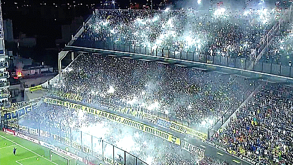

NUESTRA FILOSOFÍA
El Club Atlético Boca Juniors es una entidad deportiva argentina, con sede en el barrio de La Boca, Buenos Aires. Fue fundado el 3 de abril de 1905 por seis vecinos adolescentes hijos de italianos. El fútbol masculino es su disciplina más destacada, que se desempeña en la Primera División de Argentina, aunque también compite a nivel profesional, nacional e internacionalmente, en baloncesto, voleibol, futsal, fútbol femenino y balonmano mientras que deportes como el boxeo, judo, karate, taekwondo, gimnasia rítmica, gimnasia artística y hockey se practican a nivel amateur.
